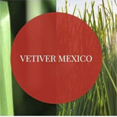

Nuestra misión es transformar ideas en identidades visuales potentes y sitios web de alto rendimiento. Nos enfocamos en el diseño minimalista, siluetas 2D y una estética ultra limpia sin distracciones visuales.

Nuestra misión es transformar ideas en identidades visuales potentes y sitios web de alto rendimiento. Nos enfocamos en el diseño minimalista, siluetas 2D y una estética ultra limpia sin distracciones visuales.
Nacimos en el corazón del Zulia con una visión clara: llevar la presencia digital al siguiente nivel. Lo que comenzó optimizando hardware al máximo y editando highlights de alto impacto para creadores de contenido, evolucionó rápidamente. Hoy somos un estudio integral que gestiona desde la creación de manuales de marca hasta migraciones complejas de e-commerce e infraestructura web para clientes en toda Latinoamérica.
Ya sea construyendo una identidad visual desde cero o estructurando el código de tu próximo proyecto en la web, aplicamos la misma precisión técnica y creativa. Sin elementos innecesarios, solo resultados que impactan.